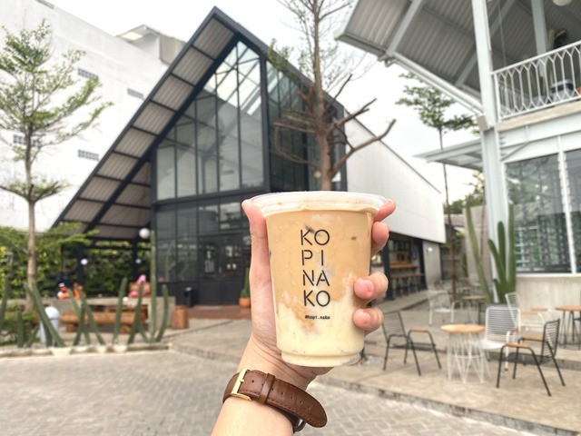

Daftar Kuliner
Sop Durian Margando

Warung sop duren ini berlokasi di dekat pertigaan lampu merah fly over Depok,buka sejak 2010.
Menu andalan Sop Duren Margando adalah
Warung Kopi Nako
Warung Nako dan Kopi Nako yaitu arsitektur, interior, dan food & beverages. Nama paketnya unik seperti
DetailZoe Reborn Library Cafe

ZOE adalah salah satu kafe yang cukup bertahan di bilangan Margonda. ZOE memang memiliki konsep berbeda dan cukup unik karena.
Detail